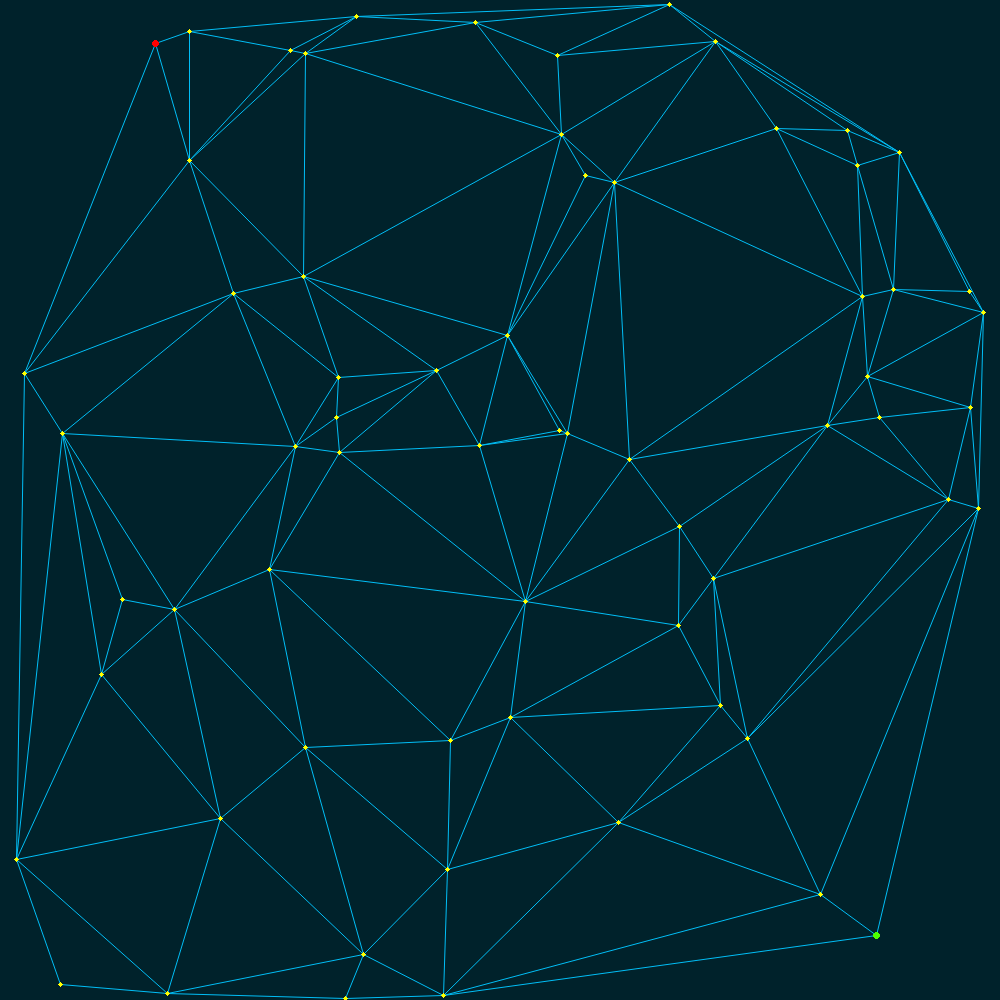

A web application for comparing online routing algorithms on Deluanay
triangulations in PHP. Built for CSCI 532 - Algorithms at
Montana State University, Spring 2014.
Landing pages use HTML5
input types, may display strangely on browsers without support.
Midpoint, Two-Step and Apex Angle algorithms described in:
New Memoryless Online Routing Algorithms for Deluanay Triangulations;
Weisheng Si, Albert Y. Zomaya; IEEE Transactions on Parallel and Distributed Systems; Vol. 23, No. 8.
Bowyer-Watson algorithm described independently in:
Computing Dirichlet Tessellations; Bowyer, Adrian; The Computer Journal; Vol. 24, No. 2, 1981
Computing the N-Dimensional Deluanay Tessellation with Application to Voronoi Polytopes; Watson, David F; The Computer Journal; Vol. 24, No. 2, 1981